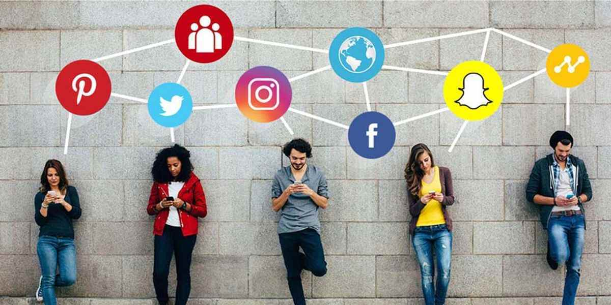

Social media has been rising and expanding exponentially, which makes a huge influence on the people, economy, society and culture. Facebook remains the biggest and most active social network, with over 2.7 billion monthly active users as of 2020 (Statista 2020). These social platforms are likely to bring more benefits and advantages to humans’ life, with limited threats and risks.
To start using social media, users need Internet connection, web-based or mobile-based services. It is obvious and transparent that social media significantly relies on the Internet, worldwide webs, Internet connection including wireless networking technology (Wi-Fi) or 4G/5G cellular networks, a mobile or a device to access to the website or the app, and most essential, electricity and power. The Internet is a globally giant interconnection of billions of computers, data centres, routers, servers, satellites, etc., a systematic and technological architecture that has revolutionized and digitalized the way of human’s communication.
Nevertheless, there are many criticisms that giant social networks, like Facebook and the rising star TikTok, are ‘stealing’ their users’ privacy and data and selling them to third-party companies to generate huge profits. Contrary to the fast and convenient communication advantage of social media, they are eliminating and taking away our face-to-face, physical, emotional interaction and connection – the real values and meanings of our society. Additionally, social media causes addiction, depression, image insecurities and negative mental health. 
The social media industry is changing every second, and the future of it seems to be unpredictable. There is likelihood that more and more people participate in social networks, prioritize these digital platforms as key communication and point-of-contact. Brands are going to put more efforts and resources into augmented reality (AR) in social media commerce, AI-targeting ads and digital influencers to provide a seamless and interactive journey. However, it’s high time users were concerned about their privacy and digital identities.
Statista 2020, ‘Number of Monthly Active Facebook Users Worldwide’, Statista, viewed 17 January 2021,